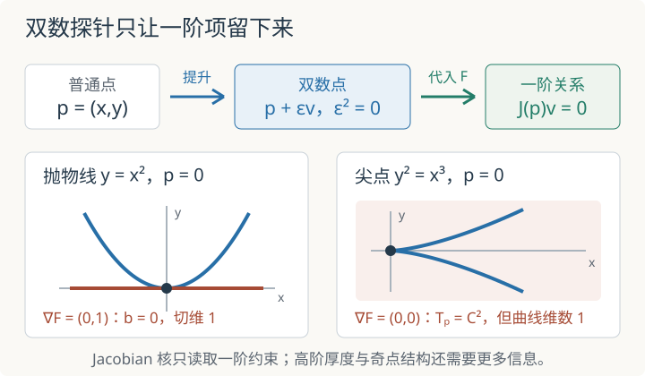

本页目录
基础衔接 11 · Zariski 切空间：一个普通点里能藏几条无穷小方向
先修：模与商、局部化、层与茎。本讲只处理复数域上有限生成代数的仿射概形及其闭点：从局部环的 \(\mathfrak m/\mathfrak m^2\)、双数提升和 Jacobian 核三个角度计算同一个切空间。它补足几何 Langlands 先修路线中的无穷小信息，但不建立一般概形、光滑态射或切复形理论。
同样只有一个点，为什么一个方向为零，另一个却有切向量？
1. 点集只回答“在哪里”，函数环还回答“怎样靠近”
对含单位交换环 \(A\)，仿射概形
的点是 \(A\) 的素理想。一个点 \(\mathfrak p\) 附近的函数由局部环
记录；它的极大理想为 \(\mathfrak m_{\mathfrak p}=\mathfrak pA_{\mathfrak p}\)，剩余域为
一般点的剩余域未必是底域。本讲限定 \(A\) 是有限生成 \(\mathbb C\)-代数，并只看闭点。Hilbert 零点定理保证这些闭点的剩余域就是 \(\mathbb C\)；在多项式坐标中，闭点 \((p_1,\ldots,p_n)\) 对应极大理想 \((x_1-p_1,\ldots,x_n-p_n)\)。
先比较
两个底层拓扑空间都只有一个点：第二个环中每个素理想都包含幂零元 \(\eta\)，所以唯一素理想是 \((\eta)\)。但 \(X_0\) 的点附近没有非零的消失函数，而 \(X_1\) 中 \(\eta\ne0\)、\(\eta^2=0\)。普通点集忘掉了这条一阶厚度。
2. 为什么要先除掉平方消失
在闭点 \(p\) 的局部环中，\(\mathfrak m_p\) 由所有在 \(p\) 消失的函数芽组成。乘积 \(fg\) 若 \(f,g\in\mathfrak m_p\)，就在该点至少二阶消失。只保留一阶信息，就是取余切空间
Zariski 切空间定义为它的复线性对偶：
对 \(X_0=\operatorname{Spec}\mathbb C\)，极大理想为零，所以 \(T_pX_0=0\)。对双数点 \(X_1\)，\(\mathfrak m=(\eta)\) 且 \(\mathfrak m^2=0\)，故 \(\mathfrak m/\mathfrak m^2\) 由 \(\eta\) 的类生成，切空间维数为 1。两个空间的普通点集相同，切空间却不同。
“取对偶”把一阶消失函数变成测量方向的线性规则。一个切向量 \(v\) 接收函数 \(f\)，输出它沿该方向的一阶变化；任何二阶乘积都应输出零，所以规则必须经过 \(\mathfrak m/\mathfrak m^2\)。
3. 双数把“一阶但没有更高阶”做成精确代数
令
闭点 \(p\) 给出求值同态 \(p^\#:A\to\mathbb C\)。点上的一个双数提升，是 \(\mathbb C\)-代数同态
使它模掉 \(\epsilon\) 后回到 \(p^\#\)。因此必可写成
乘法保持要求
也就是点 \(p\) 处的 Leibniz 规则。若 \(a,b\in\mathfrak m_p\)，两项的函数值都为零，所以 \(\delta(ab)=0\)；\(\delta\) 因而消掉 \(\mathfrak m_p^2\)，给出 \(\mathfrak m_p/\mathfrak m_p^2\) 上的线性泛函。
这里从 \(A\) 进入局部环还需核对分母。记闭点对应的极大理想为 \(\mathfrak p=\ker p^\#\)。若 \(s\notin\mathfrak p\)，则 \(p^\#(s)\ne0\)，而
在 \(D\) 中可逆，其逆为
因此局部化的通用性质让提升唯一延拓到 \(A_{\mathfrak p}=\mathcal O_{X,p}\)；这才使上面的局部环余切空间与双数提升严格接上。
反过来，给定 \(\ell:\mathfrak m_p/\mathfrak m_p^2\to\mathbb C\)，令
就得到满足 Leibniz 规则的 \(\delta\)，从而得到唯一双数提升。因此
这不是把 \(\epsilon\) 当成一个“很小但非零的实数”。\(\epsilon^2=0\) 是精确关系，它强制所有二阶及更高项消失。
4. Jacobian 核从多项式一阶展开直接出现
令
闭点 \(p=(p_1,\ldots,p_n)\) 满足所有 \(F_\alpha(p)=0\)。向量
对应候选提升
因为 \(\epsilon^2=0\)，多项式展开精确截断在一阶：
提升能穿过商环，当且仅当每个生成关系仍被送到零。又因 \(F_\alpha(p)=0\)，条件就是
于是
这里的 Jacobian 是所给定义方程在该点的一阶部分。它不是从画出的曲线“目测一条切线”，也不是数值微分近似。

5. 抛物线：代数切空间与熟悉切线一致
取
参数点 \(p_t=(t,t^2)\)。将
代入 \(F=y-x^2\)：
所以
梯度为 \(\nabla F(p_t)=(-2t,1)\)，永远非零，切空间维数始终为 1。参数曲线 \(t\mapsto(t,t^2)\) 的速度 \((1,2t)\) 正好张成这个核。在这里，Zariski 切空间与微积分中的切线相符。
6. 尖点：曲线一维，Zariski 切空间却在原点跳到二维
取尖点曲线
设 \(F=y^2-x^3\)。梯度为
所以切向约束是
当 \(t\ne0\) 时，这是一个非零线性方程，切空间维数为 1；等价地 \(b=(3t/2)a\)。但在尖点 \(t=0\)，
一阶约束变成 \(0=0\)，故
这不表示曲线在原点突然变成二维。坐标环
是超越次数 1 的整环，所以曲线维数为 1。这里使用了有限生成整域的 Krull 维数等于其分式域超越次数这一标准定理，本讲不证明它。切空间变大是在报告奇性：方程最低次数为二，没有线性项，一阶探针来不及看见约束。
也不要把二维 Zariski 切空间与实图像的割线极限混同。实参数点 \((t^2,t^3)\) 从原点看过去，斜率
所以实割线趋向 \(x\) 轴。要系统记录最低次齐次方程及重数，需要切锥等进一步工具；本讲只计算一阶 Zariski 切空间。
7. 切空间仍然看不见全部厚度
再比较两个都只有一个闭点的局部 Artin 概形：
两者的极大理想都由 \(\eta\) 生成，而且
所以它们的 Zariski 切空间都为一维。然而坐标环作为 \(\mathbb C\)-向量空间的基分别为
局部 Artin 长度分别为 2 和 3。切空间只看 \(\mathfrak m/\mathfrak m^2\)，会忘记 \(\mathfrak m^2/\mathfrak m^3\) 中的二阶厚度。相同普通点和相同切维仍不足以判定两个概形相同。
完整静态后备：实验的 curve=0 表示抛物线，curve=1 表示尖点；默认 curve=1、\(t=0\)。滑块 \(t\) 从 \(-1\) 到 \(1\)，图只画实参数曲线与当前点，切空间计算仍在 \(\mathbb C\) 上。
| 曲线与参数 | 点 \(p_t\) | 梯度 | 切向约束 | 切维 |
|---|---|---|---|---|
| 抛物线，\(t=0\) | \((0,0)\) | \((0,1)\) | \(b=0\) | 1 |
| 抛物线，\(t=1\) | \((1,1)\) | \((-2,1)\) | \(b=2a\) | 1 |
| 尖点，\(t=-1/2\) | \((1/4,-1/8)\) | \((-3/16,-1/4)\) | \(b=-3a/4\) | 1 |
| 尖点，\(t=0\)（默认） | \((0,0)\) | \((0,0)\) | 无一阶约束 | 2 |
| 尖点，\(t=1/2\) | \((1/4,1/8)\) | \((-3/16,1/4)\) | \(b=3a/4\) | 1 |
只有精确的 \(t=0\) 才使尖点梯度同时为零；再小但非零的 \(t\) 仍给一维切空间。图中的切向线段只是当前 Jacobian 核的实切片；尖点处显示的两条坐标轴是整个二维空间的一组基方向，不表示切空间只有两条线，也不表示曲线填满一块区域。
8. 两道迁移题
题一。 取交叉曲线 \(X=V(xy)\subset\mathbb A^2_{\mathbb C}\)。分别计算原点、\((1,0)\) 与 \((0,1)\) 的 Zariski 切空间，并比较曲线维数。
先写梯度，再核对
\(F=xy\) 的梯度为 \((y,x)\)。在原点梯度为零，所以
在 \((1,0)\)，切向约束是 \(b=0\)，得到 \(x\) 轴方向；在 \((0,1)\)，约束是 \(a=0\)，得到 \(y\) 轴方向。两条分支各为一维，整个曲线的维数也是 1，但交点的 Zariski 切空间维数跳到 2。它记录两支的一阶张成空间，不把交点变成二维曲面。
题二。 为什么 \(Z_2=\operatorname{Spec}\mathbb C[\eta]/(\eta^2)\) 与 \(Z_3=\operatorname{Spec}\mathbb C[\eta]/(\eta^3)\) 有相同切维，却能被二阶截断探针 \(\mathbb C[\epsilon]/(\epsilon^3)\) 区分？
检查关系在二阶探针中的像
一个点上提升把
对 \(Z_2\)，关系 \(\eta^2=0\) 变成 \(a^2\epsilon^2=0\)，复数域上强迫 \(a=0\)；对 \(Z_3\)，\((a\epsilon+b\epsilon^2)^3=0\) 自动成立，\(a\) 可以非零。普通双数只保留模 \(\epsilon^2\) 的一阶信息，因此两者切维同为 1；允许保留到二阶后，三重厚点多出的结构才显现。
速查与资料
| 观察层次 | 保存的信息 | 本讲算例 |
|---|---|---|
| 普通闭点 | 函数取值 | \(\operatorname{Spec}\mathbb C\) 与双数点都只有一点 |
| \(\mathfrak m/\mathfrak m^2\) | 一阶消失函数 | 切空间是其线性对偶 |
| 双数提升 | \(p+\epsilon v\)，其中 \(\epsilon^2=0\) | 精确导出 \(J_F(p)v=0\) |
| 更高商 \(\mathfrak m^n/\mathfrak m^{n+1}\) | 高阶厚度 | 双重与三重厚点切维相同但长度不同 |
双数定义、切空间及其与局部余切空间的对偶见 Stacks Project：Tangent spaces；闭点剩余域的限定见 Hilbert Nullstellensatz。本讲只在复仿射有限型闭点上推导 Jacobian 核，不把尖点算例扩张成一般概形光滑性判据。资料核查：2026-09-08。
继续计算：纤维与基变换通过平方映射的双点纤维，把环上的张量积、几何重数与底空间变化联系起来。